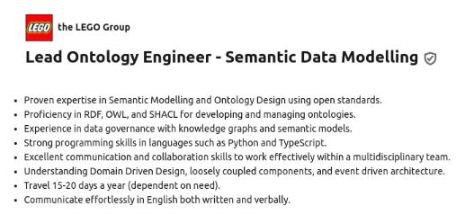
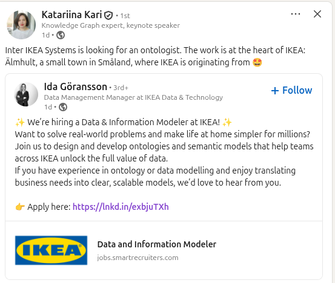

OWL
Mikel Egaña Aranguren
mikel-egana-aranguren.github.io

Mikel Egaña Aranguren
Mikel Egaña Aranguren
mikel-egana-aranguren.github.io
https://github.com/mikel-egana-aranguren/DBA




OWL: Web Ontology Language
W3C-ren estandar ofiziala web-ean ontologiak sortzeko, semantika zehatz eta formal batekin (=HTML, !=SQL)
Ontologia: interes-eremu bati buruzko deskribapen zehatzen multzoa
Giza komunikazioan gaizki-ulertuak ekiditen ditu
Softwareak modu uniforme eta aurreikusgarrian jokatzea bermatu
RDF hizkuntza bera datuak eta bere hiztegia definitzeko* (NoSQL!RDF!)
1. funtzioa: datuen integraziorako hiztegia
2. funtzioa: interes-eremua deskribatzeko eta arrazonamendu automatikoa aplikatzeko lengoaia
Ez da programazio-lengoaia: deklaratiboa da, domeinuaren egoera bat deskribatzen du
Ez da eskema-lengoaia: ez du dokumentu baten egitura agintzen (adib. XML/JSON schema) ezta datuen egitura - Horretarako SHACL dago
Ez da datu-baseen framework bat: Open World Assumption jarraitzen du (ez dagoen informazioa egia izan daiteke, ez da faltsu bezala suposatzen)
Closed World Assumption (CWA): DBan ez dagoena faltsua da (SQL)
Open World Assumption (OWA): esaten ez dena egia edo faltsua izan daiteke (OWL)
Adibidea: Mariaren adinari buruzko informaziorik ez badago, SQLk NULL/adinik gabe suposatzen du; OWLek ez dakiela suposatzen du (Esplizituki esan behar da Mariak ez duela adinik)
Bi URI ezberdinek entitate berari erreferentzia egin diezaiokete
ex:Bilbao eta ex:Bilbo owl:sameAs izan daitezke
Iturri ezberdinetako datuen integraziorako baliagarria
Arrazonamenduaren bidez bateratzea automatikoa ahalbidetzen du
owl:differentFrom bereizketa behartzeko
Entitateak: domeinuko objektuei erreferentzia egiten dieten elementuak: Jon, Pertsona, adinaDu, ...
Axiomak: ontologia baten oinarrizko baieztapenak (egiazkotzat hartzen dira): Jon Pertsona bat da, Helduek 18 baino adin handiagoa dute, ...
Adierazpenak: entitateen eta axiomen konbinazioak deskribapen konplexuak osatzeko: funtzionarioa heldu bat da, gutxienez iraupen mugagabeko lan bat duena funtsa publikoak jasotzen dituen erakunde batean ...
Banakoak (individuals): objektu zehatzak (Jon, Maria, ...)
Klaseak (classes): banakoak biltzen dituzten kategoriak (Pertsona, Emakumea, ...)
Propietateak (properties): entitateen arteko erlazioak (adinaDu, bikotea, ...)
Arrazonatzaileek (reasoners) automatikoki kalkula ditzakete axiomen ondorioak
A axioma-multzo batek a axioma inplikatzen du (entails) a egia bada A egia den bakoitzean
Axioma-multzo bat konsistentea izan daiteke (egoera posible bat dago non guztiak egiazkoak diren) edo inkonsistentea
Ontologia inkonsistentea: kontradikzio logikoak ditu
Klase ezin betegarria (Non satisfiable): ezin du instantziarik izan (owl:Nothing-en baliokidea)
Arrazonatzailea erabili inkonsistentziak detektatu eta azaltzeko
Functional-Style Syntax: espezifikazio eta inplementaziorako
RDF/XML: OWL 2 tresna guztientzat derrigorrezkoa
Turtle: RDF serializazio irakurgarria
Manchester OWL Syntax: gizakientzat
OWL/XML: XML Schema-n oinarritua
OWL 2-rekin oinarrizko modelaketa
[protege]
Banako bat klase batekoa dela deklaratzea:
:Mary rdf:type :Person .
:Mary rdf:type :Woman .
[OWL RDF Turtle syntax]
Banako bat hainbat klasetakoa izan daiteke aldi berean (RDF! Web Semantikoa! NoSQL!)
"Emakume guztiak pertsonak dira" → azpiklase-erlazioa
:Woman rdfs:subClassOf :Person .
:Mother rdfs:subClassOf :Woman .
Bi klaseek banako berberak dituzte:
:Person owl:equivalentClass :Human .
SubClassOf bi norabideetan deklaratzea bezalakoa da
Ezin da banakorik egon bi klaseetakoa dena:
:Woman owl:disjointWith :Man .
Maria Emakumea bada, arrazonatzaileak ondorioztatzen du Maria ez dela Gizona
[Arrazonatzailea aktibatu; inkonsistentea; explain]
Banakoak elkarren artean erlazionatzen dituzte (Positiboa edo negatiboa):
:Jon rdf:type owl:NamedIndividual ;
:pareja :Mary .
[ rdf:type owl:NegativePropertyAssertion ;
owl:sourceIndividual :Jon ;
owl:assertionProperty :pareja ;
owl:targetIndividual :Mary
] .
[Arrazonatzailea aktibatu]
:pareja rdfs:subPropertyOf :relacion .
B A-ren bikotea bada → B-k A-rekin erlazioa du
(Alderantzizko erlazioa ez da nahitaez egia)
[Arrazonatzailea aktibatu]
Propietate batek zer entitate mota konektatzen dituen adierazteko:
:tieneHijo rdfs:domain :persona .
:tieneHijo rdfs:range :menor .
"Pedro tieneHijo Mikel (Adulto klasea)" bada → inferentzia?
Adulto disjointWith menor → inferentzia?
"Pedro tieneHijo Maria" bada → inferentzia?
⚠ Domain/Range ez dira murrizketak, inferentzia-axiomak dira
Adibidea: edad domain Pertsona
"Felix edad 9" eta "Felix rdf:type Katua" esaten badugu
→ Arrazonatzaileak ondorioztatzen du Felix baita ere Pertsona dela
Domain/Range-k ez dute balioztatzen: klase berriak inferitzen dituzte
(Irtenbidea?)
OWLek ez du suposatzen izen desberdinak = banako desberdinak (No Unique Name Assumption)
:James owl:sameAs :Jim .
:John owl:differentFrom :Bill .
Banakoak datu-balioekin (literalak) erlazionatzen dituzte:
:John :hasAge "51"^^xsd:integer .
[] a owl:NegativePropertyAssertion ;
owl:sourceIndividual :Jack ;
owl:assertionProperty :hasAge ;
owl:targetValue "53"^^xsd:integer .
:hasAge rdfs:domain :Person .
:hasAge rdfs:range xsd:nonNegativeInteger .
XML Schema-ren datatypes: xsd:integer, xsd:string, xsd:boolean, ...
Klase konplexuetarako eraikitzaile logikoak
Klaseak bi klaseetan dauden banakoak ditu:
EquivalentClasses(:Mother ObjectIntersectionOf(:Parent :Woman))
] .
[OWL functional syntax]
→ Mother guztiak Woman dira eta Mother guztiak Parent dira
Klaseak gutxienez klase bateko banakoak ditu:
Class: Parent
EquivalentTo:
Father or Mother
[Manchester OWL syntax]
Klasekoak ez diren banakoak:
# ChildlessPerson = Person AND NOT Parent
:ChildlessPerson owl:equivalentClass [
owl:intersectionOf ( :Person [
rdf:type owl:Class ;
owl:complementOf :Parent
] )
] .
Beharrezko baldintzak baina ez nahikoak:
# Grandfather guztiak Man AND Parent dira
# (baina Man AND Parent guztiak ez dira Grandfather)
SubClassOf(
:Grandfather
ObjectIntersectionOf( :Man :Parent )
)
EquivalentClasses = beharrezko eta nahiko baldintza
SubClassOf = beharrezko baldintza soilik
Gutxienez erlazionatutako balio bat klase batekoa da:
# Parent = gutxienez seme/alaba bat du Person dena
EquivalentClasses(
:Parent
ObjectSomeValuesFrom( :hasChild :Person )
)
Hizkuntza naturaleko adierazleak: "bat", "gutxienez bat"
Erlazionatutako balio guztiak klase batekoak dira:
# HappyPerson = bere seme-alaba guztiak HappyPerson dira
EquivalentClasses(
:HappyPerson
ObjectAllValuesFrom( :hasChild :HappyPerson )
)
Adierazleak: "soilik", "esklusiboki", "beste ezer ez"
ObjectAllValuesFrom( :hasChild :HappyPerson )
Semerik gabeko pertsona batek murrizketa hau betetzen du!
Gainera gutxienez seme zoriontsu bat izatea exigitzeko:
EquivalentClasses(
:HappyPerson
ObjectIntersectionOf(
ObjectAllValuesFrom( :hasChild :HappyPerson )
ObjectSomeValuesFrom( :hasChild :HappyPerson )
)
)
# John-en semeak = aita John dutenak
EquivalentClasses(
:JohnsChildren
ObjectHasValue( :hasParent :John )
)
# Nartzisista = bere burua maite du
EquivalentClasses(
:NarcisticPerson
ObjectHasSelf( :loves )
)
Erlazionatutako banako kopurua zehaztea:
# John-ek gehienez 4 seme-alaba ditu Parent direnak
ClassAssertion(
ObjectMaxCardinality( 4 :hasChild :Parent )
:John )
# John-ek gutxienez 2 seme-alaba ditu Parent direnak
ClassAssertion(
ObjectMinCardinality( 2 :hasChild :Parent )
:John )
# John-ek zehazki 3 seme-alaba ditu Parent direnak
ClassAssertion(
ObjectExactCardinality( 3 :hasChild :Parent )
:John )
# Zehazki 5 seme-alaba
:John rdf:type [
rdf:type owl:Restriction ;
owl:onProperty :hasChild ;
owl:cardinality "5"^^xsd:nonNegativeInteger
] .
# Gehienez 4 seme-alaba Parent direnak
:John rdf:type [
rdf:type owl:Restriction ;
owl:onProperty :hasChild ;
owl:maxQualifiedCardinality
"4"^^xsd:nonNegativeInteger ;
owl:onClass :Parent
] .
Klase bat bere kide guztiak zerrendatuz definitzea:
# Klase itxia: Bill, John eta Mary soilik
EquivalentClasses(
:MyBirthdayGuests
ObjectOneOf( :Bill :John :Mary )
)
# Turtle:
:MyBirthdayGuests owl:equivalentClass [
owl:oneOf ( :Bill :John :Mary )
] .
Jeff MyBirthdayGuests bada → Jeff = Bill, John edo Mary
Adibideak/ExpresionCompleja.ttl
ONTOLOGY DESIGN PATTERNS (ODPs) PUBLIC CATALOG (Adibideak/odp_1.6)
Ezaugarri eta eraikuntza aurreratuak
# hasParent hasChild-en alderantzizkoa da
InverseObjectProperties( :hasParent :hasChild )
# Turtle:
:hasParent owl:inverseOf :hasChild .
# Erabilera anonimoa adierazpenetan:
EquivalentClasses(
:Orphan
ObjectAllValuesFrom(
ObjectInverseOf( :hasChild )
:Dead
)
)
# A hasSpouse B bada → B hasSpouse A
SymmetricObjectProperty( :hasSpouse )
# A hasChild B bada → INOIZ EZ B hasChild A
AsymmetricObjectProperty( :hasChild )
# Turtle:
:hasSpouse rdf:type owl:SymmetricProperty .
:hasChild rdf:type owl:AsymmetricProperty .
Asimetrikoa ≠ ez-simetrikoa (asimetrikoa indartsuagoa da)
# Banako guztiak bere buruaren senideak dira
ReflexiveObjectProperty( :hasRelative )
# Inor ezin da bere buruaren aita izan
IrreflexiveObjectProperty( :parentOf )
# Turtle:
:hasRelative rdf:type owl:ReflexiveProperty .
:parentOf rdf:type owl:IrreflexiveProperty .
# Pertsona bakoitzak gehienez senar bat du
FunctionalObjectProperty( :hasHusband )
# Senar bakoitza gehienez pertsona batena da
InverseFunctionalObjectProperty( :hasHusband )
# Turtle:
:hasHusband rdf:type owl:FunctionalProperty .
:hasHusband rdf:type owl:InverseFunctionalProperty .
Mary hasHusband James eta Mary hasHusband Jim bada → James = Jim
# A hasAncestor B eta B hasAncestor C bada
# → A hasAncestor C
TransitiveObjectProperty( :hasAncestor )
# Turtle:
:hasAncestor rdf:type owl:TransitiveProperty .
hasParent hasAncestor-en azpipropietatea da: gurasoen gurasoen gurasoak automatikoki sartzen dira
(Adibideak/TransitivaFuncional)
# Inor ez da pertsona beraren aita eta semea
DisjointObjectProperties( :hasParent :hasSpouse )
Ezin dira bi banako aldi berean bi propietateen bidez konektatuta egon
# hasParent o hasParent = hasGrandparent
SubObjectPropertyOf(
ObjectPropertyChain( :hasParent :hasParent )
:hasGrandparent
)
# hasFather o hasBrother = hasUncle
SubObjectPropertyOf(
ObjectPropertyChain( :hasFather :hasBrother )
:hasUncle
)
# Gizarte Segurantzaren zenbakia Person bakoitza
# modu bakarrean identifikatzen du
HasKey( :Person () ( :hasSSN ) )
# Turtle:
:Person owl:hasKey ( :hasSSN ) .
Klasearen instantzia izendatu bakoitza propietate horien balioen bidez modu bakarrean identifikatzen da
Datatype-n murrizketak eta definizioak
# Adina 0 eta 150 artean (XML Schema-ren fazetak)
DatatypeDefinition(
:personAge
DatatypeRestriction( xsd:integer
xsd:minInclusive "0"^^xsd:integer
xsd:maxInclusive "150"^^xsd:integer
)
)
# majorAge = personAge AND NOT minorAge
DatatypeDefinition(
:majorAge
DataIntersectionOf(
:personAge
DataComplementOf( :minorAge )
)
)
# toddlerAge = {1, 2}
DatatypeDefinition(
:toddlerAge
DataOneOf( "1"^^xsd:integer "2"^^xsd:integer )
)
# hasAge funtzionala da: pertsona bakoitzak adin bakarra du
FunctionalDataProperty( :hasAge )
# Teenager: adina 13 eta 19 artean
SubClassOf(
:Teenager
DataSomeValuesFrom( :hasAge
DatatypeRestriction( xsd:integer
xsd:minExclusive "12"^^xsd:integer
xsd:maxInclusive "19"^^xsd:integer
)
)
)
Metadatuak eta antolaketa
Anotazioek ez dute esanahi logikorik: annotation property-en bidez kodetutako metadatuak dira (rdfs:label, rdfs:comment, ...)
Entitateak anotatu
Axiomak anotatu
Ontologiak anotatu
URI ontologia: Adibideak/ehu.ttl, URI entitateak?
Ontologiak fitxategien bidez inportatu: Adibideak/ehu-pdi.ttl, Adibideak/ehu-estudiante.ttl
Entitateak ontologien artean axiomen bidez lotu: owl:sameAs Adibideak/ehu.ttl-n
Entitateen bateratzea URIen bidez: schema:Person
Ontologiak URIen bidez inportatu: LOV; Category tab: academy; edu- Education Ontology
OWL 2 interpretatzeko bi modu
Direct Semantics:
RDF-Based Semantics:
OWL 2 osoa oso adierazgarria da baina konputazionalki garestia
Profilak propietate konputazional onak dituzten azpimultzo sintaktikoak dira
Profil bat ez da bestearen azpimultzoa
OWL 2 DL arrazonatzaile guztiak hiru profiletarako baliozkoak dira (baina motelago izan daitezke)
Optimizatua: deskribapen estruktural konplexuak dituzten ontologia handientzat: SNOMED-CT, Gene Ontology
Onartzen du: klase-adierazpen aberatsak, propietate-kateak, intersekzioa
Ez du onartzen: ezeztapena, disjuntzioa, kuantifikazio unibertsala, alderantzizkoak
Konplexutasuna: polinomikoa (PTIME)
Optimizatua: datu-bolumen handien gaineko kontsultentzat
DL-Lite-n oinarritua: kontsulten itzulpena SQLra
Onartzen du: alderantzizkoak, propietate-hierarkiak, ER/UML diagramak
Ez du onartzen: kuantifikazio existentziala klase-adierazpenera, propietate-kateak, berdintasuna
Konplexutasuna: LogSpace datuetan (NLOGSPACE)
Optimizatua: arau bidezko arrazonamendu eskalagarria
Bateragarria: RDF(S), arauak (forward/backward chaining)
Onartzen du: intersekzioa, propietate-kateak, gehienezko kardinalitatea
Ez du onartzen: banako ezezagunen existentzia behartzen duten existentzialak
Konplexutasuna: polinomikoa (PTIME)
| Profila | Erabilera-kasua | Inplementazioa |
|---|---|---|
| OWL 2 EL | Ontologia handien sailkapena | Arrazonatzaile espezializatuak (ELK, CEL) |
| OWL 2 QL | Kontsultak + ontologia arina | SPARQL → SQL berridazketa (Ontop) |
| OWL 2 RL | RDF datuen aberastea | Arau-motorrak (GraphDB) |

SPARQLek RDF grafoa kontsultatzen du, berez ez ditu inferitutako axiomak kontuan hartzen
GraphDB inference on: inferentziak materializatzen ditu (hirukote berriak) edo arrazonamendua aplikatzen du SPARQL emaitza hobeak lortzeko
Kontsulta federatuak interoperableagoak dira endpoint-ek ontologiak partekatzen badituzte
Ontologia-biltegiak: Linked Open Vocabularies, NCBO Bioportal, ...
EU vocabularies: European Legislation Identifier, ...
...